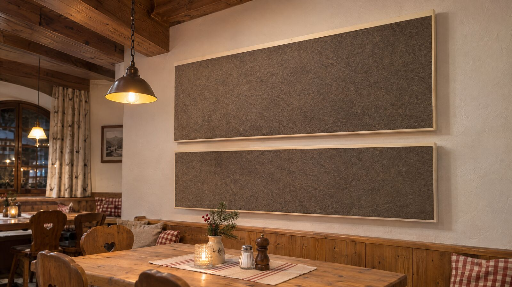
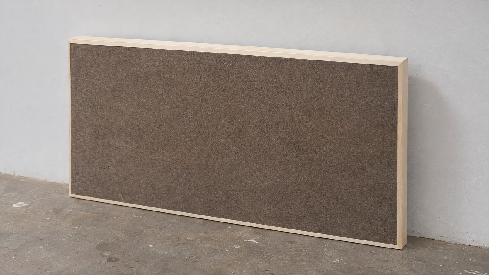
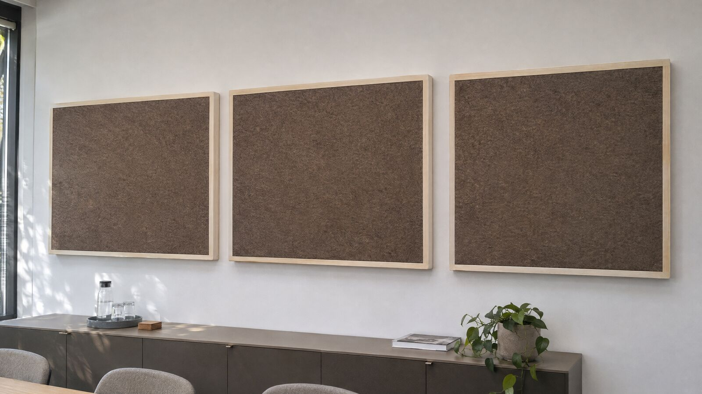
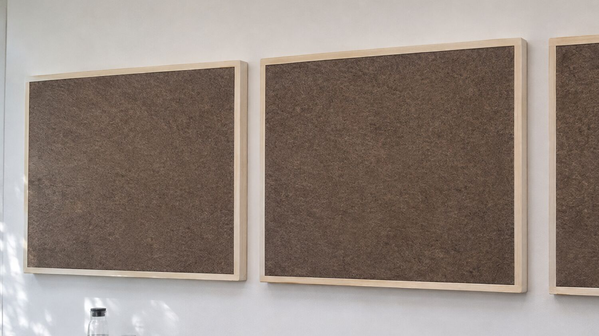
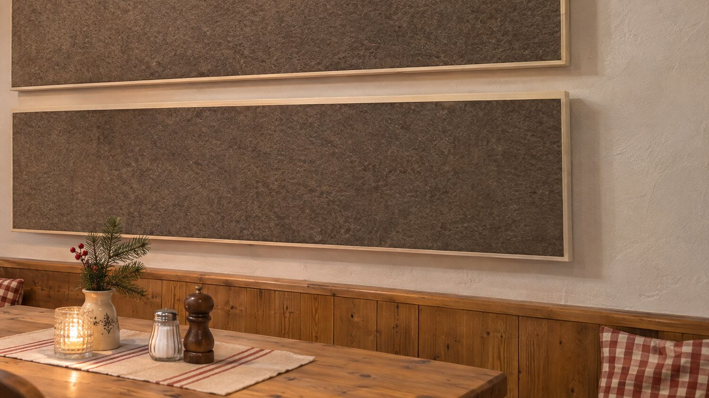
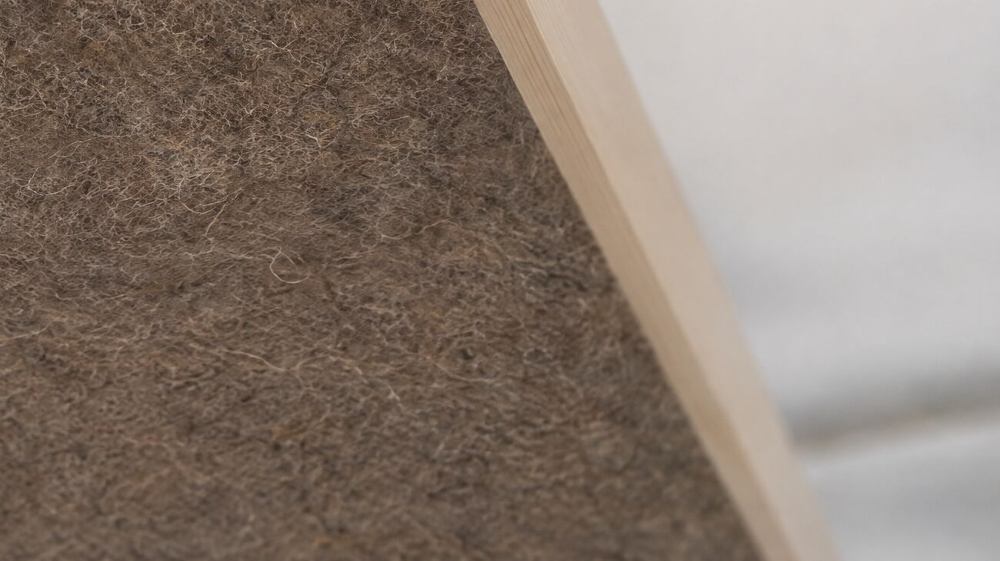

Produkte / Natur Wandabsorber
Wandabsorber aus Schafwolle
Natur Wandabsorber
Ein schlichter, nachhaltiger Wandabsorber aus Schafwolle im Holzrahmen. Er verbessert die Sprachverständlichkeit im Raum. Erhältlich als Light oder als Resistant mit erhöhtem Brandschutz.

Bis Klasse B
Hohe Schallabsorption in einem breiten Frequenzspektrum, Variante Light.
Verdeckt montiert
Rückseitiges Aufhängesystem zum Einhängen an der Wand.
Standard und Sonder
Standardformate bis 2408 × 1208 mm, Sonderformate auf Anfrage.
Gutes Raumklima
Schafwolle filtert Schad- und Reizstoffe aus der Raumluft.

Produkt
Ein Rahmen, der nicht auffällt
Die großflächigen Absorber geben der Wand eine ruhige Fläche aus Schafwolle und Fichte und machen den Raum leiser.
- Rahmen aus Fichte, 36 mm stark, Falz zur Sichtseite 14 mm
- Verdeckte Montage mit U-Winkeln und Halteklammern an der Wand
- Wolle in den Naturfarben Stone, Creme, Wood und Origin
Gestaltung
Einzeln oder als Gruppe
Mit Standard- und Sonderformaten passen die Absorber zur Geometrie Ihres Raums.




Aufbau
Aufbau wie beim Deckensegel
Der Wandabsorber teilt sich den Aufbau mit dem Deckensegel. Wand und Decke sehen deshalb gleich aus.
Silentum® Schafwollfilz, 9 mm
Sichtfläche, nimmt Sprachfrequenzen auf.
Trägerplatte
Light: FSC-zertifizierter Wellkarton. Resistant: Gipskarton für erhöhten Brandschutz.
Rahmen und Befestigung
Fichte naturbelassen, rückseitige Massivholzleisten und kleine Montageklammern aus verzinktem Blech.
| Light | Resistant | |
|---|---|---|
| Absorber | 9 mm Silentum® Schafwollfilz auf Wellkartonplatte | 9 mm Silentum® Schafwollfilz auf Gipskartonplatte |
| Schallabsorption | Bis Schallabsorberklasse B, hohe Absorption in einem breiten Frequenzspektrum | Hohe Absorption in einem breiten Frequenzspektrum, gute Tiefenabsorption |
| Rahmen | Fichte, naturbelassen, Stärke 36 mm, Falz Sichtseite 14 mm | |
| Standardformate | 2408 × 1208 × 36 mm 1208 × 1208 × 36 mm | 1988 × 1208 × 36 mm |
| Gewicht | 3,9 kg/m² inkl. Aufhängung | ca. 9,8 kg/m² inkl. Aufhängung |
| Brandklasse | Wellkarton Klasse E, Schafwolle C-s2-d0 | Gipskarton Klasse A2, Schafwolle C-s2-d0 |
| CO₂-Emissionen | GWP total ca. −0,31 kg CO₂e/m² | GWP total ca. −0,43 kg CO₂e/m² |
| Montage | Verdeckt mit U-Winkeln auf rückseitigen Massivholzleisten und Halteklammern an der Wand | |
| Naturfarben | Stone, Creme, Wood, Origin. Sonderfarben auf Anfrage. | |
Schallabsorptionsgrad αs je Frequenz
Bezogen auf die einseitige Absorberfläche, Werte aus dem Prospekt F2026. Angaben zu Brandklasse und Schallabsorption gelten laut Bedingungen und Aufbau im jeweiligen Prüfzeugnis.
Formate
Standardformate, maßstäblich
Häufige Fragen
Gut zu wissen
Light oder Resistant?
Light ist besonders nachhaltig und leicht, ohne Brandschutz-Klassifikation. Resistant ist etwas schwerer und hat eine nicht brennbare Gipskartonplatte für erhöhten Brandschutz.
Wie werden die Absorber befestigt?
Mit einem rückseitigen, verdeckten Aufhängesystem zum Einhängen an der Wand: U-Winkel auf Massivholzleisten und Halteklammern. Weil die Paneele großflächig sind, ist die Montage günstig.
Gibt es andere Wollfarben?
Ja, die Silentum® Schafwolle gibt es in den Naturfarben Stone, Creme, Wood und Origin. Sonderfarben sind auf Anfrage möglich.
Eignet sich der Absorber für Bestandsräume?
Ja. Der Wandabsorber lässt sich in Bestandsgebäuden nachrüsten und auch im Neubau einsetzen.
Muster
Halten Sie die Wolle in der Hand
Das Muster zeigt die Silentum® Schafwolle in den Naturfarben. Kostenlos und ohne Verpflichtung.
Muster anfordern